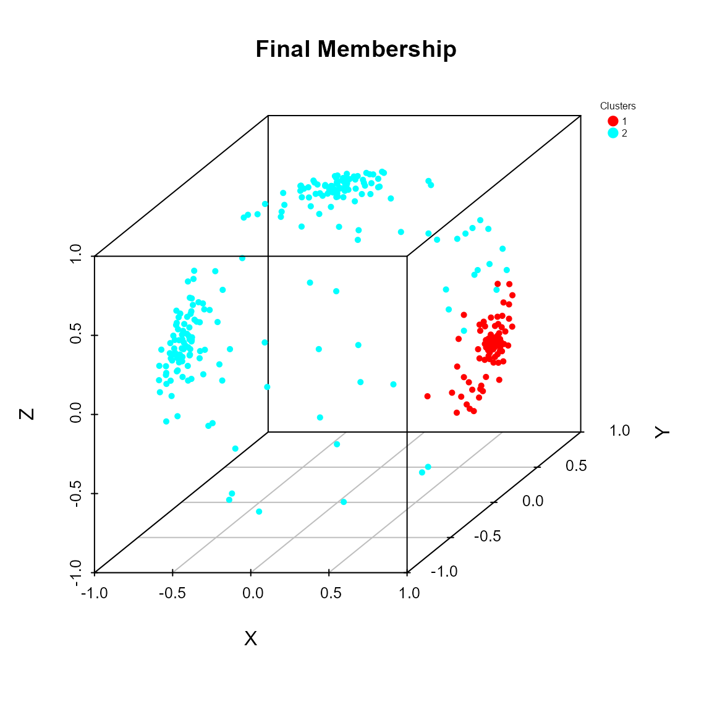
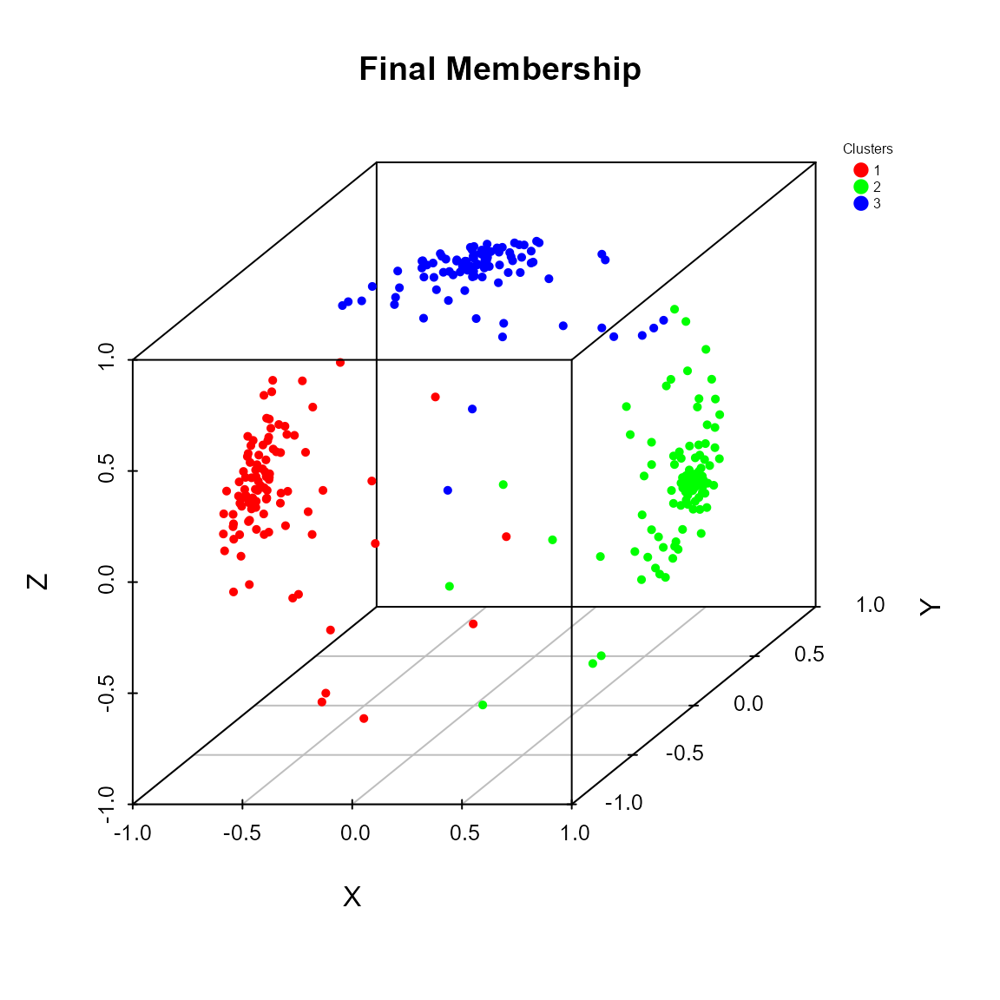
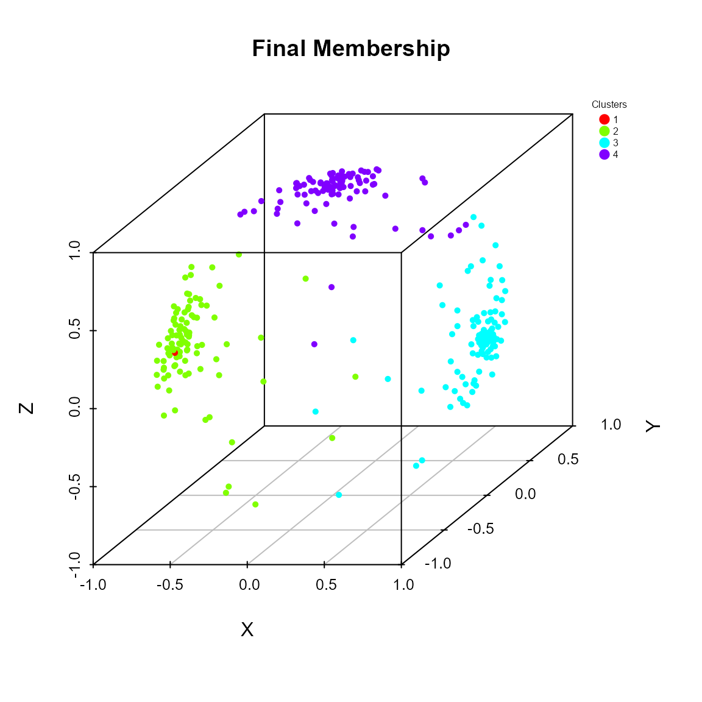

Overview
The QuadratiK package provides the first implementation,
in R and Python, of a comprehensive set of goodness-of-fit tests and a
clustering technique for spherical data using kernel-based quadratic
distances. The primary goal of QuadratiK is to offer
flexible tools for testing multivariate and high-dimensional data for
uniformity, normality, comparing two or more samples.
This package includes several novel algorithms that are designed to handle spherical data, which is often encountered in fields like directional statistics, geospatial data analysis, and signal processing. In particular, it offers functions for clustering spherical data efficiently, for computing the density value and for generating random samples from a Poisson kernel-based density.
Installation
You can install the version published on CRAN of
QuadratiK:
install.packages("QuadratiK")Or the development version on GitHub:
library(devtools)
devtools::install_github('giovsaraceno/QuadratiK-package')The QuadratiK package is also available in Python on
PyPI and as a Dashboard application. Usage instruction for the Dashboard
can be found at https://quadratik.readthedocs.io/en/latest/user_guide/dashboard_application_usage.html.
Citation
If you use this package in your research or work, please cite it as follows:
Saraceno G, Markatou M, Mukhopadhyay R, Golzy M (2024). QuadratiK: A Collection of Methods Constructed using Kernel-Based Quadratic Distances. https://cran.r-project.org/package=QuadratiK
@Manual{saraceno2024QuadratiK,
title = {QuadratiK: Collection of Methods Constructed using Kernel-Based
Quadratic Distances},
author = {Giovanni Saraceno and Marianthi Markatou and Raktim Mukhopadhyay
and Mojgan Golzy},
year = {2024},
note = {<https://cran.r-project.org/package=QuadratiK>,
<https://github.com/giovsaraceno/QuadratiK-package>,
<https://giovsaraceno.github.io/QuadratiK-package/>}
}and the associated paper:
Saraceno Giovanni, Markatou Marianthi, Mukhopadhyay Raktim, Golzy Mojgan (2024). Goodness-of-Fit and Clustering of Spherical Data: the QuadratiK package in R and Python. arXiv preprint arXiv:2402.02290.
@misc{saraceno2024package,
title={Goodness-of-Fit and Clustering of Spherical Data: the QuadratiK package in
R and Python},
author={Giovanni Saraceno and Marianthi Markatou and Raktim Mukhopadhyay and
Mojgan Golzy},
year={2024},
eprint={2402.02290},
archivePrefix={arXiv},
primaryClass={stat.CO},
url={<https://arxiv.org/abs/2402.02290>}
}Key features and basic usage
Goodness-of-Fit Tests
The software implements one, two, and k-sample tests for goodness of fit, offering an efficient and mathematically sound way to assess the fit of probability distributions. Our tests are particularly useful for large, high dimensional data sets where the assessment of fit of probability models is of interest.
The provided goodness-of-fit tests can be performed using the
kb.test() function. The kernel-based quadratic distance
tests are constructed using the normal kernel which depends on the
tuning parameter \(h\). If a value for
\(h\) is not provided, the function
perform the select_h() algorithm searching for an optimal
value. For more details please visit the relative help
documentations.
?kb.test
?select_hThe proposed tests perform well in terms of level and power for contiguous alternatives, heavy tailed distributions and in higher dimensions.
Test for normality
To test the null hypothesis of normality \(H_0:F=\mathcal{N}_d(\mu, \Sigma)\)
x <- matrix(rnorm(100), ncol = 2)
# Does x come from a multivariate standard normal distribution?
kb.test(x, h=0.4)##
## Kernel-based quadratic distance Normality test
## U-statistic V-statistic
## ------------------------------------------------
## Test Statistic: 2.199833 1.442243
## Critical Value: 1.646849 8.901682
## H0 is rejected: TRUE FALSE
## Selected tuning parameter h: 0.4If needed, we can specify \(\mu\) and \(\Sigma\), otherwise the standard normal distribution is considered.
x <- matrix(rnorm(100,4), ncol = 2)
# Does x come from the specified multivariate normal distribution?
kb.test(x, mu_hat = c(4,4), Sigma_hat = diag(2), h = 0.4)##
## Kernel-based quadratic distance Normality test
## U-statistic V-statistic
## ------------------------------------------------
## Test Statistic: -0.525541 0.7999849
## Critical Value: 1.78503 8.901682
## H0 is rejected: FALSE FALSE
## Selected tuning parameter h: 0.4Two-sample test
In case we want to compare two samples \(X \sim F\) and \(Y \sim G\) with the null hypothesis \(H_0:F=G\) vs \(H_1:F\not =G\).
x <- matrix(rnorm(100), ncol = 2)
y <- matrix(rnorm(100,mean = 5), ncol = 2)
# Do x and y come from the same distribution?
kb.test(x, y, h = 0.4)##
## Kernel-based quadratic distance two-sample test
## U-statistic Dn Trace
## ------------------------------------------------
## Test Statistic: 5.826251 10.18863
## Critical Value: 0.5556158 0.9727228
## H0 is rejected: TRUE TRUE
## CV method: subsampling
## Selected tuning parameter h: 0.4k-sample test
In case we want to compare \(k\) samples, with \(k>2\), that is \(H_0:F_1=F_2=\ldots=F_k\) vs \(H_1:F_i\not =F_j\) for some \(i\not = j\).
x1 <- matrix(rnorm(100), ncol = 2)
x2 <- matrix(rnorm(100), ncol = 2)
x3 <- matrix(rnorm(100, mean = 5), ncol = 2)
y <- rep(c(1, 2, 3), each = 50)
# Do x1, x2 and x3 come from the same distribution?
x <- rbind(x1, x2, x3)
kb.test(x, y, h = 0.4)##
## Kernel-based quadratic distance k-sample test
## U-statistic Dn Trace
## ------------------------------------------------
## Test Statistic: 7.425756 11.32805
## Critical Value: 0.6876574 1.04981
## H0 is rejected: TRUE TRUE
## CV method: subsampling
## Selected tuning parameter h: 0.4Test for uniformity on the sphere
Expanded capabilities include supporting tests for uniformity on the
d-dimensional Sphere based on Poisson kernel. The Poisson
kernel depends on the concentration parameter \(\rho\) and a location vector \(\mu\). For more details please visit the
help documentation of the pk.test() function.
?pk.testTo test the null hypothesis of uniformity on the \(d\)-dimensional sphere \(\mathcal{S}^{d-1} = \{x \in \mathbb{R}^d : ||x||=1 \}\)
# Generate points on the sphere from the uniform ditribution
x <- sample_hypersphere(d = 3, n_points = 100)
# Does x come from the uniform distribution on the sphere?
pk.test(x, rho = 0.7)##
## Poisson Kernel-based quadratic distance test of
## Uniformity on the Sphere
## Selected consentration parameter rho: 0.7
##
## U-statistic:
##
## H0 is rejected: FALSE
## Statistic Un: -1.022779
## Critical value: 1.493441
##
## V-statistic:
##
## H0 is rejected: FALSE
## Statistic Vn: 14.75936
## Critical value: 23.22949Poisson kernel-based distribution (PKBD)
The package offers functions for computing the density value and for
generating random samples from a PKBD. The Poisson kernel-based
densities are based on the normalized Poisson kernel and are defined on
the \(d\)-dimensional unit sphere. For
more details please visit the help documentation of the
dpkb() and rpkb() functions.
?dpkb
?rpkbExample
## [,1] [,2] [,3]
## [1,] 0.9943098 0.07224880 -0.07828181
## [2,] 0.9014271 0.39702599 0.17262568
## [3,] 0.9931730 -0.04942158 0.10566436
## [4,] 0.9928060 -0.03462673 -0.11461799
## [5,] 0.9918560 -0.11140878 0.06172335
## [6,] 0.9581717 0.28166851 -0.05069385## [,1]
## [1,] 5.2499441
## [2,] 0.1863290
## [3,] 4.5437876
## [4,] 4.3490178
## [5,] 3.9045857
## [6,] 0.6070007Clustering Algorithm for Spherical Data
The package incorporates a unique clustering algorithm specifically
tailored for spherical data and it is especially useful in the presence
of noise in the data and the presence of non-negligible overlap between
clusters. This algorithm leverages a mixture of Poisson kernel-based
densities on the Sphere, enabling effective clustering of spherical data
or data that has been spherically transformed. For more details please
visit the help documentation of the pkbc() function.
?pkbcExample
# Generate 3 samples from the PKBD with different location directions
x1 <- rpkb(n = 100, mu = c(1,0,0), rho = rho)
x2 <- rpkb(n = 100, mu = c(-1,0,0), rho = rho)
x3 <- rpkb(n = 100, mu = c(0,0,1), rho = rho)
x <- rbind(x1$x, x2$x, x3$x)
# Perform the clustering algorithm
# Serch for 2, 3 or 4 clusters
cluster_res <- pkbc(dat = x, nClust = c(2, 3, 4))
summary(cluster_res)## Poisson Kernel-Based Clustering on the Sphere (pkbc) Results
## ------------------------------------------------------------
##
## Summary:
## LogLik WCSS
## [1,] -627.4997 399.1898
## [2,] -397.5671 328.2013
## [3,] -389.4135 328.1096
##
## Results for 2 clusters:
## Estimated Mixing Proportions (alpha):
## [1] 0.6716657 0.3283343
##
## Clustering table:
##
## 1 2
## 206 94
##
##
## Results for 3 clusters:
## Estimated Mixing Proportions (alpha):
## [1] 0.3013458 0.3650787 0.3335754
##
## Clustering table:
##
## 1 2 3
## 93 111 96
##
##
## Results for 4 clusters:
## Estimated Mixing Proportions (alpha):
## [1] 0.301644481 0.328950459 0.004059434 0.365345625
##
## Clustering table:
##
## 1 2 3 4
## 93 95 1 111The software includes additional graphical functions, aiding users in validating and representing the cluster results as well as enhancing the interpretability and usability of the analysis.
# Predict the membership of new data with respect to the clustering results
x_new <- rpkb(n = 10, mu = c(1,0,0), rho = rho)
memb_mew <- predict(cluster_res, k = 3, newdata = x_new$x)
memb_mew$Memb## [1] 3 3 3 3 3 3 3 3 3 3
# Compute measures for evaluating the clustering results
val_res <- pkbc_validation(cluster_res)
val_res## $metrics
## 2 3 4
## ASW 0.5164057 0.6413962 0.4697234
##
## $IGP
## $IGP[[1]]
## NULL
##
## $IGP[[2]]
## [1] 1 1
##
## $IGP[[3]]
## [1] 1.000000 1.000000 0.989899
##
## $IGP[[4]]
## [1] 1.0000000 0.9886364 0.9375000 1.0000000
# Plot method for the pkbc object:
# - scatter plot of data points on the sphere
# - elbow plot for helping the choice of the number of clusters
plot(cluster_res)
Additional Resources
For more detailed information about the QuadratiK
package, you can explore the following resources:
- Package Documentation on CRAN – Official package documentation on CRAN.
- GitHub Repository – The GitHub repository with the development version, issues, and community discussions.
- QuadratiK Package Website – A dedicated website with additional tutorials and examples.
If you’re new to the package, we recommend starting with the available vignettes:
References
For more information on the methods implemented in this package, refer to the associated research papers:
Markatou, M. and Saraceno, G. (2024). “A Unified Framework for Multivariate Two- and k-Sample Kernel-based Quadratic Distance Goodness-of-Fit Tests.” arXiv:2407.16374
Ding, Y., Markatou, M. and Saraceno, G. (2023). “Poisson Kernel-Based Tests for Uniformity on the d-Dimensional Sphere.” Statistica Sinica. doi: 10.5705/ss.202022.0347.
Golzy, M. and Markatou, M. (2020) Poisson Kernel-Based Clustering on the Sphere: Convergence Properties, Identifiability, and a Method of Sampling, Journal of Computational and Graphical Statistics, 29:4, 758-770, DOI: 10.1080/10618600.2020.1740713.